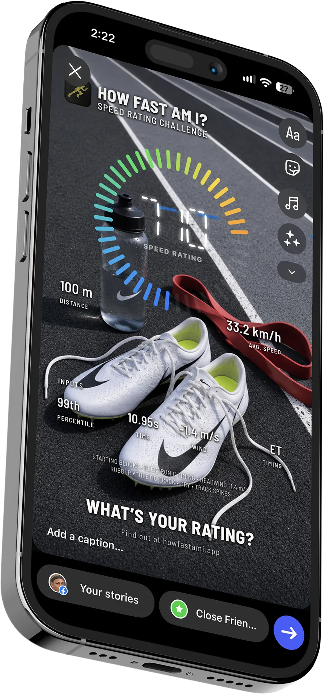

Конвертировать таймовый спринт
Начните с расстояния и времени. Для дополнительного контекста добавьте тип старта, метод измерения, поверхность, обувь, ветер или высоту.
Конвертер спринт-времени
Засекли время спринта на 30 м, 60 м или другой дистанции? Введите дистанцию и время, чтобы узнать свой прогноз на 100 м. Укажите тип старта, способ хронометража и покрытие дорожки, чтобы учесть условия забега.
Нет необходимости использовать аксессуар. Начните с расстояния и времени.

Используйте оценку 100 м, чтобы поместить более короткие спринты на общую шкалу и отслеживать, как ваши результаты меняются со временем.
Начните с расстояния и времени. Для дополнительного контекста добавьте тип старта, метод измерения, поверхность, обувь, ветер или высоту.
Найдите среднюю скорость в миль в час или км/ч, затем поставьте в контекст с оценкой скорости, сравнения с учетом возраста, и поделимые результаты.
Наймите атлетов, сформируйте вашу релай squad, развивайте качества, преследуйте личные рекорды, поднимайтесь на лидербордах, и собирайте баджа по пути.
Добавьте расстояние и время, которое вы записали. Используйте простой режим для быстрой оценки.
В режиме деталей расскажите приложению, как вы начали и как запустился часы. Полетный старт дает подбегание, а старт из положения покоя включает ускорение с нуля.
Используйте оценку, чтобы сравнить спринты на разных расстояниях и отслеживать прогресс.

Пример расчёта: 60 м за 7,50 секунды дают прогноз 11,64 секунды на 100 м.
В режиме «Track Meet» выберите «Male» и введите 60 м и 7,50 секунды. Укажите старт с колодок, электронный хронометраж, шиповки, сухую дорожку с резиновым покрытием и отсутствие ветра. Возраст и высоту над уровнем моря оставьте пустыми.
11,64 секунды — прогноз. Официальное время на 100 м можно получить только в забеге на 100 м с хронометражем.


Одно из возможных применений
В забеге на 40 ярдов за 4,50 секунды средняя скорость составляет 18,2 мили/ч (29,3 км/ч) на всей дистанции. В режиме 40 ярдов приложение рассчитает прогноз для 100 м с учётом способа хронометража и условий.


Поделите свой бег
Сохраните результат спринта как прозрачный стикер и наложите его на своё фото или видео. Поделитесь результатом в истории Instagram или опубликуйте его в TikTok. Можно также сохранить результат отдельным видео.


Сквад-рacing
Соберите релай-команду с дополнительными сильными сторонами. Управляйте формой, улучшайте переходы, учитывайте условия соревнований и проверьте, может ли ваша четверка дать результат, когда это действительно важно.
Готовься, когда готов
Приведите расстояние и время из вашего следующего спринта.